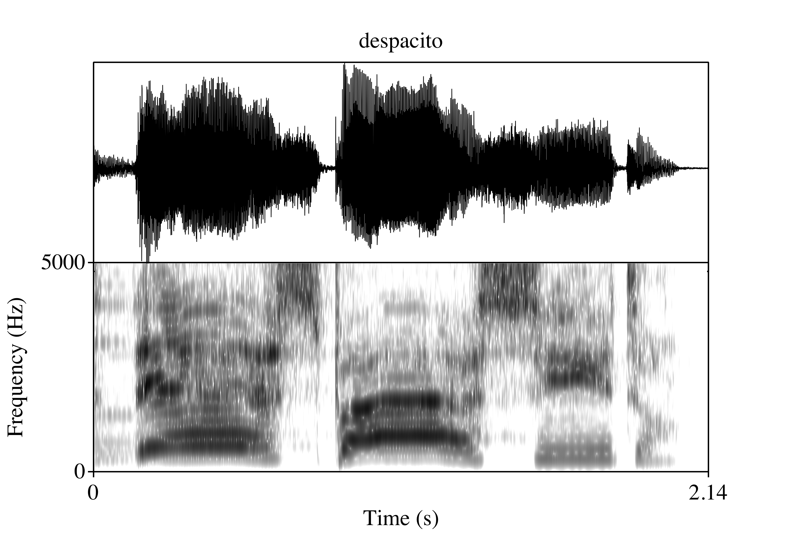

TL; DR


In the remixed version of the song “despacito”, Justin Bieber sings in Spanish. Some articles online criticize his pronunciation. I analyzed his realization of “p” and “t” in Praat and find that, while his pronunciation is not perfect, it is pretty good. I don’t believe he commits the “errors” suggested in the article.
Overview
I recently heard the song despacito featuring teen hero Justin Bieber (my wife mentioned to me that he sings in Spanish and my curiosity got the best of me). I distinctly remember being rather impressed by how well he sang in Spanish, so I was surprised when I saw this article pop up in my facebook feed. Basically, J Balvin and Nicky Jam (I have no idea who these guys are) make fun of J Biebs accent. Specifically, they harp on his pronunciation of the title of the song, suggesting the /t/ in the diminutive form of “despacio” (slow) is realized as [ɹ]. In fact, they sing it a few times [des.pa.si.ɹo] (des-pa-see-row, if you aren’t familiar with IPA) and, in jest, claim at one point that he sings ‘dorito’ [ðo.ɹi.ɾo]. You can watch this specific part here:
Now, this type of non-native pronunciation actually makes a lot of sense, at least I think the ‘dorito’ comment does. In American and Canadian English an intervocalic “t” (and “d”) is usually pronounced as a flap, which in essence corresponds with Spanish “r” in the same position (note: it has to be in the same position, otherwise it would pronounced as a trill). This leads to all kinds of difficulties for learners of Spanish because they have to avoid a phonological process of their native language. For example, a common mispronunciation of the Spanish word “todo” (all) is [to.ɾo], which actually means “toro” (bull). That is, English speakers (mis)pronounce the intervocalic /d/ as a flap, which is most perceptually similar to Spanish “r”. On the other hand, when they try to pronounce “toro”, the “r” is realized as the English rhotic [ɹ].
Thus, if Bieber were pronouncing /ito/ as most native English speakers do, as a flap, it would be perceived as a Spanish “r” (the flap, not the trill). However, there is no real explanation for why he would pronounce it with an English rhotic ([ɹ]) as J Balvin and Nicky Jam claim. I personally did not hear this pronunciation, so I assume they were just teasing the teenage heart throb. Nonetheless, I noticed a lot of comments in the article were also making fun of his pronunciation, so I decided I would take a look in praat to determine if I am going crazy or if the internet is just full of haters. Here is an example of what we will look at:
The analysis
I downloaded the music video from youtube and converted the .mp4 file to .m4a, and then to .wav. In praat I converted the .wav from stereo to mono. Justin sings the chorus as well as some of the verses. I’m just going to look at the chorus because the verses are accompanied by Daddy Yankee and/or Luis Fonsi. Luckily, pretty much every time he says “despacito” in the chorus there is silence, so we can use that for our analysis. I am going to focus on how he pronounces the stop /t/ (though I did get formant frequency measurements for all the vowels… maybe for another post). This only leaves us with about 5 useful tokens, but there are also a good amount of /p/’s that we can compare them with. Here is arguably the best token:

It’s clear—at least to me—that Justin is not producing an English rhotic where he should be producing [t]. In other words, he is not saying des-pa-see-row. How do I know? Well, if we zoom in on the final /ito/, we notice two things: 1) there is clearly a closure and 2) there is a burst. These are characteristics of a stop consonant. Now, you might be thinking “Yeah, but a flap looks pretty similar in a spectrogram” and you wouldn’t be wrong, but the clear difference here is that after the release there is a short gap before the voicing of the final /o/. This short gap is called voice-onset time (VOT). Stops have VOT; flaps do not. Here is a close up:

Now a characteristic of English voiceless stops (“p”, “t”, “k”) is that in word initial position they are produced with aspiration and have long-lag VOT, usually around 60 ms. We refer to them with IPA with: [ph, th, kh]. Voiceless stops are different in Spanish, as they are not aspirated and have short-lag VOT, usually from 0 to 25 ms. The “ito” of “despacito” is word internal, thus, in theory, for an English speaker it should not be aspirated because it is normally realized as a flap, though in emphatic speech it could be realized as [th]. Hopefully I have already convinced you that Biebs is not flapping. So our next question is: what kind of VOT do his stops have? If they are short-lag, we can conclude that they are more Spanish-like. If, on the other hand, they are aspirated, then they would be more English-like. So let’s take a look!
I measured VOT of every p and t every time Justin sings “despacito”. First, let’s load some packages we will need.
library(lingStuff); library(tidyverse)Now we can load the data and check the structure.
# Load data
bieber_vot <- read_csv("./data/despacito.csv")# Check structure of dataframe
bieber_vot %>%
select(., prefix, votP, votT) %>%
gather(., key = phon, value = vot, -prefix) %>%
str(.)
## Classes 'tbl_df', 'tbl' and 'data.frame': 10 obs. of 3 variables:
## $ prefix: chr "despacito" "despacito1" "despacito2" "despacito3" ...
## $ phon : chr "votP" "votP" "votP" "votP" ...
## $ vot : num 23.3 19.2 19 19.4 15.6 ...Looks good. Let’s plot the VOT of the p’s and t’s and see how they look. I’ve set the x-limit to range from 0 to 60.
# Plot vot as a function of phon
bieber_vot %>%
select(., prefix, votP, votT) %>%
gather(., key = phon, value = vot, -prefix) %>%
ggplot(., aes(x = phon, y = vot, color = phon)) +
stat_summary(fun.data = 'mean_cl_boot', geom = 'pointrange', size = 1.1) +
stat_summary(fun.y = 'mean', geom = 'point', color = 'darkred', size = 2.75) +
ylim(0, 60) + ylab("VOT (ms)") + xlab("") +
scale_x_discrete(labels = c('/p/', '/t/')) +
coord_flip() +
scale_color_brewer(name = '', guide = F) +
theme_dark(base_size = 22, base_family = "Times")
Recall that an English-like VOT would be around 60 ms (but could range from around 40 to over 100!). We can see that the p’s have a VOT of approximately 20 ms (19.29 ms +/- 2.72 sd, to be exact), and the t’s have a VOT of around 25 ms (23.1 ms +/- 7.39 sd). Both are certainly within range of native Spanish pronunciations.
Not so fast…
There is one last thing to keep in mind before we give JBiebs a pass on his Spanish and it’s an important one. Spanish /t/ and English /t/ are articulated at different places in the mouth. Specifically, Spanish /t/ is dental and English /t/ is alveolar. What this means is that when an English speaker pronounces a word with a “t” in Spanish, like ‘despacito’, she also needs to change the place of articulation, i.e. the tongue needs to make contact with the back of the top teeth, and not the hard ridge right above them. When we looked at VOT in the present analysis we didn’t take this difference into account. My personal opinion is that el señorito does a pretty good job, but if you listen closely to the very last ‘despacito’ in the song, it does sound rather alveolar, i.e. gringo-y.